Tutorial: Introduction to Modeling in Gen
Welcome! In this tutorial, you’ll get your feet wet with Gen, a multi-paradigm platform for probabilistic modeling and inference. By “multi-paradigm,” we mean that Gen supports many different approaches to modeling and inference:
-
Unsupervised learning and posterior inference in generative models using Monte Carlo, variational, EM, and stochastic gradient techniques.
-
Supervised learning of conditional inference models (e.g. supervised classification and regression).
-
Hybrid approaches including amortized inference / inference compilation, variational autoencoders, and semi-supervised learning.
Don’t worry if you haven’t seen some of these approaches before. One goal of these tutorials will be to introduce you to a subset of them, from a unified probabilistic programming perspective.
In this Tutorial
Approaching a problem from a probabilistic perspective requires both modeling and inference:
-
Modeling: You first need to frame the problem — and any assumptions you bring to the table — as a probabilistic model. A huge variety of problems can be viewed from a modeling & inference lens, if you set them up properly. This notebook is about how to think of problems in this light, and how to use Gen to formally specify your assumptions and the tasks you wish to solve.
-
Inference: You then need to do the hard part: inference, that is, solving the problem. In this notebook, we’ll use a particularly simple generic inference algorithm: importance sampling with the prior as our proposal distributions. With enough computation, the algorithm can in theory solve any modeling and inference problem, but in practice, for most problems of interest, it is too slow to achieve accurate results in a reasonable amount of time. Future tutorials introduce some of Gen’s programmable inference features, which let you tailor the inference algorithm for use with more complex models (Gen will still automate the math!).
Throughout this tutorial, we will emphasize key degrees of modeling flexibility afforded by the probabilistic programming approach, for example:
-
Using a stochastic branching and function abstraction to express uncertainty about which of multiple models is appropriate.
-
Representing models with an unbounded number of parameters (a ‘Bayesian non-parametric’ model) using loops and recursion.
We’ll also introduce a technique for validating a model and inference algorithm by predicting new data from inferred parameters, and comparing this data to the observed data set.
However, this tutorial does not exhaustively cover all features of Gen’s modeling language. For example, Gen’s modeling combinators and its static modeling language enable improved performance, but are not covered here.
Outline
Section 1. Julia, Gen, and this Jupyter notebook
Section 2. Writing a probabilistic model as a generative function
Section 3. Doing posterior inference
Section 4. Predicting new data
Section 5. Calling other generative functions
Section 6. Modeling with an unbounded number of parameters
1. Julia, Gen, and this Jupyter notebook
Gen is a package for the Julia language. The package can be loaded with:
using Gen
Gen programs typically consist of a combination of (i) probabilistic models written in modeling languages and (ii) inference programs written in regular Julia code. Gen provides a built-in modeling language that is itself based on Julia.
This tutorial uses a Jupyter notebook. All cells in the notebook are regular Julia cells. In Julia, semicolons are optional at the end of statements; we will use them at the end of some cells so that the value of the cell is not printed.
a = 1 + 1
2
a = 1 + 1;
This notebook uses the Plots.jl Julia package for plotting.
using Plots
This notebook will make use of Julia symbols. Note that a Julia symbol is different from a Julia string:
typeof(:foo)
Symbol
typeof("foo")
String
2. Writing a probabilistic model as a generative function
Probabilistic models are represented in Gen as generative functions. Generative functions are used to represent a variety of different types of probabilistic computations including generative models, inference models, custom proposal distributions, and variational approximations (see the Gen documentation or the paper). In this tutorial, we focus on implementing generative models. A generative model represents a data-generating process; as such, it encodes any assumptions we have about our data and our problem domain.
The simplest way to construct a generative function is by using the built-in
modeling DSL. Generative
functions written in the built-in modeling DSL are based on Julia function
definition syntax, but are prefixed with the @gen macro:
@gen function function_name_here(input_arguments)
# Function body...
end
The function represents the data-generating process we are modeling. Conceptually, every time we run the function, it should generate a new “synthetic dataset” in line with our assumptions. Along the way, it will make random choices; each random choice it makes can be thought of as adding a random variable to a probabilistic model.
Within the function body, most Julia code is permitted, but random choices use special syntax that annotates them with an address:
{addr} ~ distribution(parameters)
A simple example of such an invocation is a normal distribution parametrized with mean 0 and standard deviation 1:
my_variable = {:my_variable_address} ~ normal(0, 1)
Every random choice must be given an address, which can be
an arbitrary value—but we often use a symbol.
(:my_variable_address is a symbol in the Julia language.)
Think of the address as the name of a particular random choice, which
is distinct from the name of the variable. For example, consider
the following code:
x = {:initial_x} ~ normal(0, 1)
if x < 0
x = x + ({:addition_to_x} ~ normal(2, 1))
end
This code manipulates a single variable, x, but may make up to two random
choices: :initial_x and :addition_to_x.
Note that we can only use ~ to give addresses to random choices.
The following will not work because the code is trying to trace the
expression sin(x) which is an invocation of an ordinary Julia function, not
a distribution.
# INVALID:
my_variable = {:not_a_random_choice} ~ sin(x)
(We will see a bit later that it is also possible to use ~
to sample from helper generative functions, not just primitive
distributions like normal. But for now, think of ~ as being
for making random choices.)
Example: Bayesian linear regression
Suppose we have a dataset of points $(x, y)$ in the plane, and we’d like to infer a likely slope and intercept that explains their (linear) relationship. To approach this problem from a probabilistic perspective, we first need to develop a model. The model answers the question: how might this dataset have come to be? It also encodes our assumptions, e.g., our assumption that our data is explained by a linear relationship between $x$ and $y$.
The generative function below represents a probabilistic model of a linear relationship in the x-y plane. Given a set of $x$ coordinates, it randomly chooses a line in the plane and generates corresponding $y$ coordinates so that each $(x, y)$ is near the line. We might think of this function as modeling house prices as a function of square footage, or the measured volume of a gas as a function of its measured temperature.
@gen function line_model(xs::Vector{Float64})
# We begin by sampling a slope and intercept for the line.
# Before we have seen the data, we don't know the values of
# these parameters, so we treat them as random choices. The
# distributions they are drawn from represent our prior beliefs
# about the parameters: in this case, that neither the slope nor the
# intercept will be more than a couple points away from 0.
slope = ({:slope} ~ normal(0, 1))
intercept = ({:intercept} ~ normal(0, 2))
# We define a function to compute y for a given x
function y(x)
return slope * x + intercept
end
# Given the slope and intercept, we can sample y coordinates
# for each of the x coordinates in our input vector.
for (i, x) in enumerate(xs)
# Note that we name each random choice in this loop
# slightly differently: the first time through,
# the name (:y, 1) will be used, then (:y, 2) for
# the second point, and so on.
({(:y, i)} ~ normal(y(x), 0.1))
end
# Most of the time, we don't care about the return
# value of a model, only the random choices it makes.
# It can sometimems be useful to return something
# meaningful, however; here, we return the function `y`.
return y
end;
The generative function takes as an argument a vector of x-coordinates. We create one below:
xs = [-5., -4., -3., -2., -1., 0., 1., 2., 3., 4., 5.];
Given this vector, the generative function samples a random choice representing the slope of a line from a normal distribution with mean 0 and standard deviation 1, and a random choice representing the intercept of a line from a normal distribution with mean 0 and standard deviation 2. In Bayesian statistics terms, these distributions are the prior distributions of the slope and intercept respectively. Then, the function samples values for the y-coordinates corresponding to each of the provided x-coordinates.
This generative function returns a function y encoding the slope
and intercept.
We can run the model like we run a regular Julia function:
y = line_model(xs)
y (generic function with 1 method)
This gives us the return value of the model, but we
may be more interested in the values of the random choices that
line_model makes. Crucially, each random choice is annotated with a
unique address. A random choice is assigned an address using the {addr} ~ ...
keyword. Addresses can be any Julia value. In this program, there are two
types of addresses used – Julia symbols and tuples of symbols and integers.
Note that within the for loop, the same line of code is executed multiple
times, but each time, the random choice it makes is given a distinct address.
Although the random choices are not included in the return value, they are
included in the execution trace of the generative function. We can run the
generative function and obtain its trace using the
simulate method
from the Gen API:
trace = Gen.simulate(line_model, (xs,));
This method takes the function to be executed, and a tuple of arguments to the function, and returns a trace and a second value that we will not be using in this tutorial. When we print the trace, we see that it is a complex data structure.
println(trace)
Gen.DynamicDSLTrace{DynamicDSLFunction{Any}}(DynamicDSLFunction{Any}(Dict{Symbol, Any}(), Dict{Symbol, Any}(), Type[Vector{Float64}], false, Union{Nothing, Some{Any}}[nothing], var"##line_model#274", Bool[0], false), Trie{Any, Gen.ChoiceOrCallRecord}(Dict{Any, Gen.ChoiceOrCallRecord}((:y, 11) => Gen.ChoiceOrCallRecord{Float64}(9.383490918197065, -0.044423239264899994, NaN, true), (:y, 3) => Gen.ChoiceOrCallRecord{Float64}(-2.8292929611830555, 1.3417576659518766, NaN, true), :intercept => Gen.ChoiceOrCallRecord{Float64}(1.8319666784347306, -2.0315984526265156, NaN, true), (:y, 1) => Gen.ChoiceOrCallRecord{Float64}(-5.959713829773403, 1.1304941689886963, NaN, true), (:y, 8) => Gen.ChoiceOrCallRecord{Float64}(4.976431986524593, 1.225414500885959, NaN, true), (:y, 7) => Gen.ChoiceOrCallRecord{Float64}(3.2821949214637147, 0.9430035125891707, NaN, true), (:y, 5) => Gen.ChoiceOrCallRecord{Float64}(0.2548748434761596, 1.3292402671095034, NaN, true), (:y, 6) => Gen.ChoiceOrCallRecord{Float64}(1.9173535451258832, 1.0191007096227396, NaN, true), (:y, 10) => Gen.ChoiceOrCallRecord{Float64}(7.954210096018949, 1.236889673045222, NaN, true), :slope => Gen.ChoiceOrCallRecord{Float64}(1.5441050822599893, -2.111068785735237, NaN, true), (:y, 4) => Gen.ChoiceOrCallRecord{Float64}(-1.1305752102234436, 0.5940207818854444, NaN, true), (:y, 2) => Gen.ChoiceOrCallRecord{Float64}(-4.346401246132024, 1.3834569033725725, NaN, true), (:y, 9) => Gen.ChoiceOrCallRecord{Float64}(6.53337380525437, 1.1449621654185604, NaN, true)), Dict{Any, Trie{Any, Gen.ChoiceOrCallRecord}}()), false, 7.161249871243092, 0.0, ([-5.0, -4.0, -3.0, -2.0, -1.0, 0.0, 1.0, 2.0, 3.0, 4.0, 5.0],), var"#y#1"{Float64, Float64}(1.8319666784347306, 1.5441050822599893))
A trace of a generative function contains various information about an execution of the function. For example, it contains the arguments on which the function was run, which are available with the API method get_args:
Gen.get_args(trace)
([-5.0, -4.0, -3.0, -2.0, -1.0, 0.0, 1.0, 2.0, 3.0, 4.0, 5.0],)
The trace also contains the value of the random choices, stored in a map from address to value called a choice map. This map is available through the API method get_choices:
Gen.get_choices(trace)
│
├── (:y, 11) : 9.383490918197065
│
├── (:y, 3) : -2.8292929611830555
│
├── :intercept : 1.8319666784347306
│
├── (:y, 1) : -5.959713829773403
│
├── (:y, 8) : 4.976431986524593
│
├── (:y, 7) : 3.2821949214637147
│
├── (:y, 5) : 0.2548748434761596
│
├── (:y, 6) : 1.9173535451258832
│
├── (:y, 10) : 7.954210096018949
│
├── :slope : 1.5441050822599893
│
├── (:y, 4) : -1.1305752102234436
│
├── (:y, 2) : -4.346401246132024
│
└── (:y, 9) : 6.53337380525437
We can pull out individual values from this map using Julia’s subscripting syntax [...]:
choices = Gen.get_choices(trace)
choices[:slope]
1.5441050822599893
We can also read the value of a random choice directly from the trace, without having to use get_choices first:
trace[:slope]
1.5441050822599893
The return value is also recorded in the trace, and is accessible with the get_retval API method:
Gen.get_retval(trace)
y (generic function with 1 method)
Or we can access the return value directly from the trace via the syntactic sugar trace[]:
trace[]
y (generic function with 1 method)
In order to understand the probabilistic behavior of a generative function, it is helpful to be able to visualize its traces. Below, we define a function that uses PyPlot to render a trace of the generative function above. The rendering shows the x-y data points and the line that is represented by the slope and intercept choices.
function render_trace(trace; show_data=true)
# Pull out xs from the trace
xs, = get_args(trace)
xmin = minimum(xs)
xmax = maximum(xs)
# Pull out the return value, useful for plotting
y = get_retval(trace)
# Draw the line
test_xs = collect(range(-5, stop=5, length=1000))
fig = plot(test_xs, map(y, test_xs), color="black", alpha=0.5, label=nothing,
xlim=(xmin, xmax), ylim=(xmin, xmax))
if show_data
ys = [trace[(:y, i)] for i=1:length(xs)]
# Plot the data set
scatter!(xs, ys, c="black", label=nothing)
end
return fig
end;
render_trace(trace)
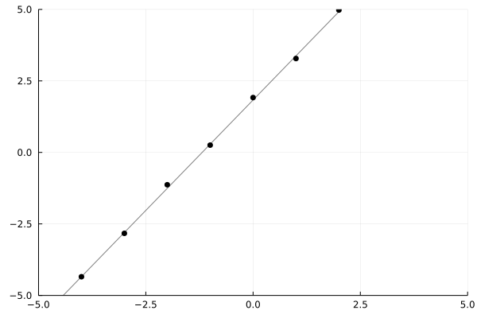
Because a generative function is stochastic, we need to visualize many runs in order to understand its behavior. The cell below renders a grid of traces.
function grid(renderer::Function, traces)
Plots.plot(map(renderer, traces)...)
end;
traces = [Gen.simulate(line_model, (xs,)) for _=1:12]
grid(render_trace, traces)
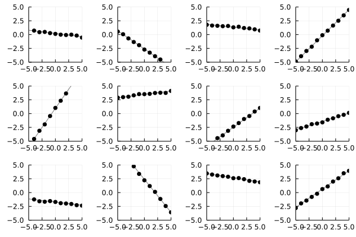
Exercise
Write a generative function that uses the same address twice. Run it to see what happens.
Exercise
Write a model that generates a sine wave with random phase, period and
amplitude, and then generates y-coordinates from a given vector of
x-coordinates by adding noise to the value of the wave at each x-coordinate.
Use a gamma(1, 1) prior distribution for the period, and a gamma(1, 1)
prior distribution on the amplitude (see
Gen.gamma).
Sampling from a Gamma distribution will ensure to give us postive real values.
Use a uniform distribution between 0 and $2\pi$ for the phase (see
Gen.uniform).
The sine wave should implement:
$ y(x) = a \sin(2\pi \frac{1}{p} x + \varphi)$,
where $a$ is the amplitude, $p$ is the period and $\varphi$ is the phase. In
Julia the constant $\pi$ can be expressed as either pi or π (unicode).
When calling trace = Gen.simulate(sine_model, (xs,)), the following choices should appear:
- amplitude:
trace[:amplitude] - period:
trace[:period] - phase:
trace[:phase]
We have provided some starter code for the sine wave model:
@gen function sine_model(xs::Vector{Float64})
# < your code here, for sampling a phase, period, and amplitude >
function y(x)
return 1 # < Edit this line to compute y for a given x >
end
for (i, x) in enumerate(xs)
{(:y, i)} ~ normal(y(x), 0.1)
end
return y # We return the y function so it can be used for plotting, below.
end;
traces = [Gen.simulate(sine_model, (xs,)) for _=1:12];
grid(render_trace, traces)
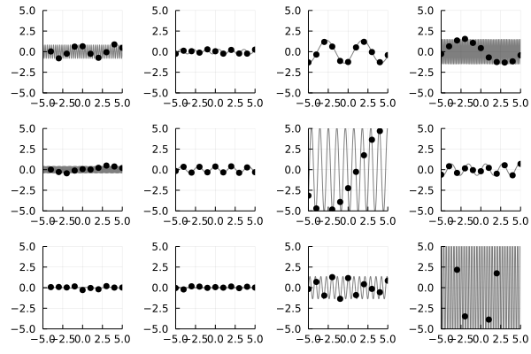
3. Doing Posterior inference
Of course, we don’t really care about generating lots of pictures of lines (or sine waves). We’d really like to begin with an actual dataset of observed $(x, y)$ points, and infer the corresponding slope and intercept (or phase, period, and amplitude). This task is called posterior inference.
We now will provide a data set of y-coordinates and try to draw inferences about the process that generated the data. We begin with the following data set:
ys = [6.75003, 6.1568, 4.26414, 1.84894, 3.09686, 1.94026, 1.36411, -0.83959, -0.976, -1.93363, -2.91303];
scatter(xs, ys, color="black", label=nothing, title="Observed data (linear)", xlabel="X", ylabel="Y")
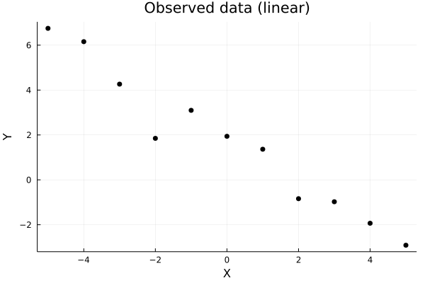
We will assume that the line model was responsible for generating the data, and infer values of the slope and intercept that explain the data.
To do this, we write a simple inference program that takes the model we are assuming generated our data, the data set, and the amount of computation to perform, and returns a trace of the function that is approximately sampled from the posterior distribution on traces of the function, given the observed data. That is, the inference program will try to find a trace that well explains the dataset we created above. We can inspect that trace to find estimates of the slope and intercept of a line that fits the data.
Functions like importance_resampling expect us to provide a model and
also an choice map representing our data set and relating it to the model.
A choice map maps random choice addresses from the model to values from our
data set. Here, we want to tie model addresses like (:y, 4) to data set
values like ys[4]:
function do_inference(model, xs, ys, amount_of_computation)
# Create a choice map that maps model addresses (:y, i)
# to observed values ys[i]. We leave :slope and :intercept
# unconstrained, because we want them to be inferred.
observations = Gen.choicemap()
for (i, y) in enumerate(ys)
observations[(:y, i)] = y
end
# Call importance_resampling to obtain a likely trace consistent
# with our observations.
(trace, _) = Gen.importance_resampling(model, (xs,), observations, amount_of_computation);
return trace
end;
We can run the inference program to obtain a trace, and then visualize the result:
trace = do_inference(line_model, xs, ys, 100)
render_trace(trace)
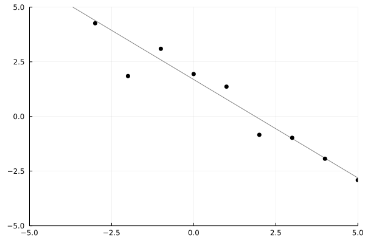
We see that importance_resampling found a reasonable slope and intercept to explain the data. We can also visualize many samples in a grid:
traces = [do_inference(line_model, xs, ys, 100) for _=1:10];
grid(render_trace, traces)
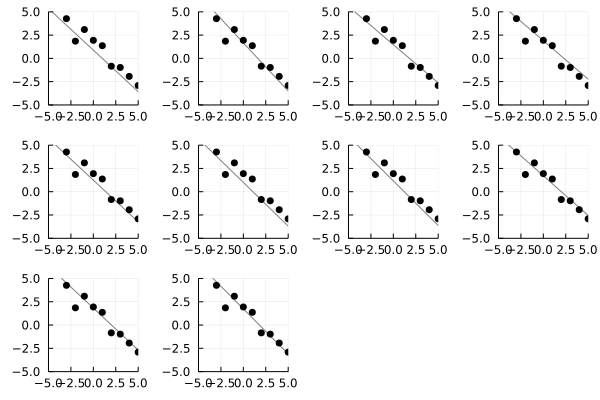
We can see here that there is some uncertainty: with our limited data, we can’t be 100% sure exactly where the line is. We can get a better sense for the variability in the posterior distribution by visualizing all the traces in one plot, rather than in a grid. Each trace is going to have the same observed data points, so we only plot those once, based on the values in the first trace:
function overlay(renderer, traces; same_data=true, args...)
fig = renderer(traces[1], show_data=true, args...)
xs, = get_args(traces[1])
xmin = minimum(xs)
xmax = maximum(xs)
for i=2:length(traces)
y = get_retval(traces[i])
test_xs = collect(range(-5, stop=5, length=1000))
fig = plot!(test_xs, map(y, test_xs), color="black", alpha=0.5, label=nothing,
xlim=(xmin, xmax), ylim=(xmin, xmax))
end
return fig
end;
traces = [do_inference(line_model, xs, ys, 100) for _=1:10];
overlay(render_trace, traces)
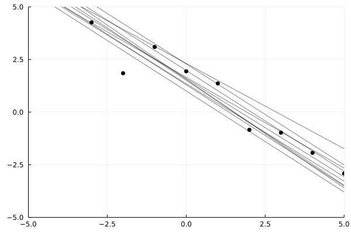
Exercise
The results above were obtained for amount_of_computation = 100. Run the algorithm with this value set to 1, 10, and 1000, etc. Which value seems like a good tradeoff between accuracy and running time? Discuss.
Exercise
Consider the following data set.
ys_sine = [2.89, 2.22, -0.612, -0.522, -2.65, -0.133, 2.70, 2.77, 0.425, -2.11, -2.76];
scatter(xs, ys_sine, color="black", label=nothing)
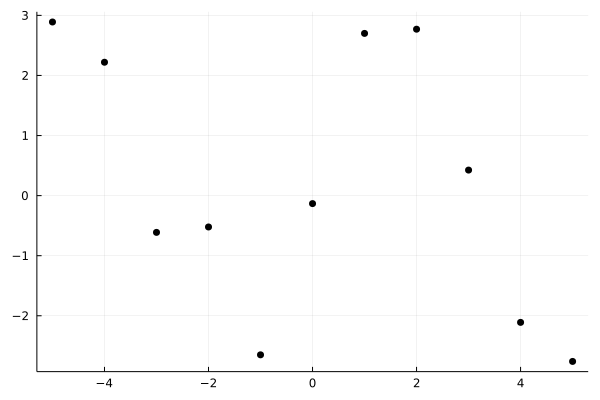
Write an inference program that generates traces of sine_model that explain this data set. Visualize the resulting distribution of traces. Temporarily change the prior distribution on the period to be gamma(1, 1) (by changing and re-running the cell that defines sine_model from a previous exercise). Can you explain the difference in inference results when using gamma(1, 1) vs gamma(5, 1) prior on the period? How much computation did you need to get good results?
4. Predicting new data
What if we’d want to predict ys given xs?
Using the API method
generate, we
can generate a trace of a generative function in which the values of certain
random choices are constrained to given values. The constraints are a choice
map that maps the addresses of the constrained random choices to their
desired values.
For example:
constraints = Gen.choicemap()
constraints[:slope] = 0.
constraints[:intercept] = 0.
(trace, _) = Gen.generate(line_model, (xs,), constraints)
render_trace(trace)
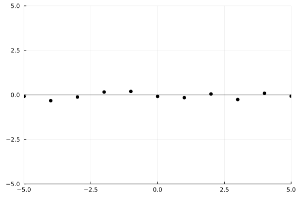
Note that the random choices corresponding to the y-coordinates are still made randomly. Run the cell above a few times to verify this.
We will use the ability to run constrained executions of a generative
function to predict the value of the y-coordinates at new x-coordinates by
running new executions of the model generative function in which the random
choices corresponding to the parameters have been constrained to their
inferred values. We have provided a function below (predict_new_data) that
takes a trace, and a vector of new x-coordinates, and returns a vector of
predicted y-coordinates corresponding to the x-coordinates in new_xs. We
have designed this function to work with multiple models, so the set of
parameter addresses is an argument (param_addrs):
function predict_new_data(model, trace, new_xs::Vector{Float64}, param_addrs)
# Copy parameter values from the inferred trace (`trace`)
# into a fresh set of constraints.
constraints = Gen.choicemap()
for addr in param_addrs
constraints[addr] = trace[addr]
end
# Run the model with new x coordinates, and with parameters
# fixed to be the inferred values.
(new_trace, _) = Gen.generate(model, (new_xs,), constraints)
# Pull out the y-values and return them.
ys = [new_trace[(:y, i)] for i=1:length(new_xs)]
return ys
end;
To illustrate, we call the function above given the previous trace (which constrained slope and intercept to be zero).
predict_new_data(line_model, trace, [1., 2., 3.], [:slope, :intercept])
3-element Vector{Float64}:
0.02694273341948937
-0.05578345643577398
0.0031286541463625053
The cell below defines a function that first performs inference on an
observed data set (xs, ys), and then runs predict_new_data to generate
predicted y-coordinates. It repeats this process num_traces times, and
returns a vector of the resulting y-coordinate vectors.
function infer_and_predict(model, xs, ys, new_xs, param_addrs, num_traces, amount_of_computation)
pred_ys = []
for i=1:num_traces
trace = do_inference(model, xs, ys, amount_of_computation)
push!(pred_ys, predict_new_data(model, trace, new_xs, param_addrs))
end
pred_ys
end;
To illustrate, we generate predictions at [1., 2., 3.] given one (approximate) posterior
trace.
pred_ys = infer_and_predict(line_model, xs, ys, [1., 2., 3.], [:slope, :intercept], 1, 1000)
1-element Vector{Any}:
[1.0032271405440183, -0.13506083352207435, -0.9583356345851033]
Finally, we define a cell that plots the observed data set (xs, ys) as red dots, and the predicted data as small black dots.
function plot_predictions(xs, ys, new_xs, pred_ys; title="predictions")
fig = scatter(xs, ys, color="red", label="observed data", title=title)
for (i, pred_ys_single) in enumerate(pred_ys)
scatter!(new_xs, pred_ys_single, color="black", alpha=0.1, label=i == 1 ? "predictions" : nothing)
end
return fig
end;
Recall the original dataset for the line model. The x-coordinates span the interval -5 to 5.
scatter(xs, ys, color="red", label="observed data")
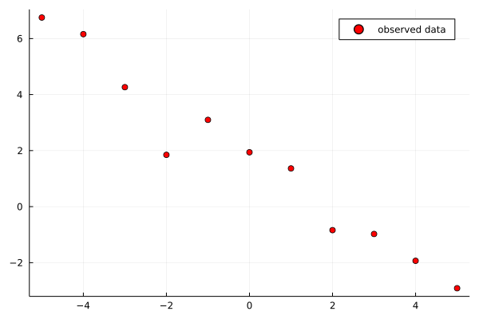
We will use the inferred values of the parameters to predict y-coordinates for x-coordinates in the interval 5 to 10 from which data was not observed. We will also predict new data within the interval -5 to 5, and we will compare this data to the original observed data. Predicting new data from inferred parameters, and comparing this new data to the observed data is the core idea behind posterior predictive checking. This tutorial does not intend to give a rigorous overview behind techniques for checking the quality of a model, but intends to give high-level intuition.
new_xs = collect(range(-5, stop=10, length=100));
We generate and plot the predicted data:
pred_ys = infer_and_predict(line_model, xs, ys, new_xs, [:slope, :intercept], 20, 1000)
plot_predictions(xs, ys, new_xs, pred_ys)
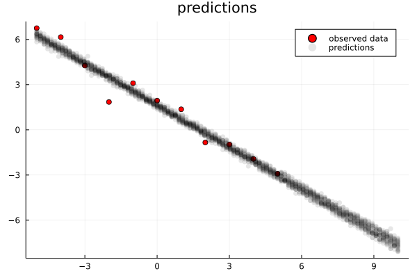
The results look reasonable, both within the interval of observed data and in the extrapolated predictions on the right.
Now consider the same experiment run with the following data set, which has significantly more noise.
ys_noisy = [5.092, 4.781, 2.46815, 1.23047, 0.903318, 1.11819, 2.10808, 1.09198, 0.0203789, -2.05068, 2.66031];
pred_ys = infer_and_predict(line_model, xs, ys_noisy, new_xs, [:slope, :intercept], 20, 1000)
plot_predictions(xs, ys_noisy, new_xs, pred_ys)
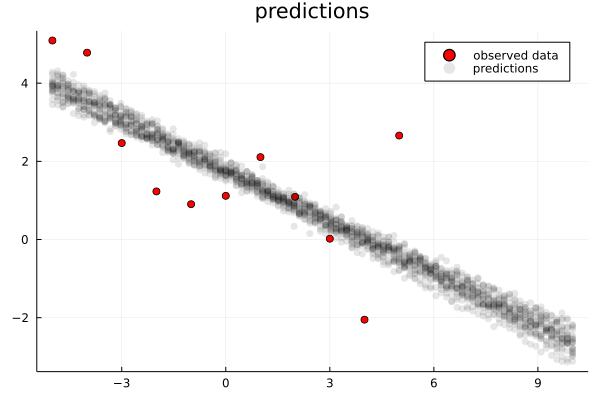
It looks like the generated data is less noisy than the observed data in the regime where data was observed, and it looks like the forecasted data is too overconfident. This is a sign that our model is mis-specified. In our case, this is because we have assumed that the noise has value 0.1. However, the actual noise in the data appears to be much larger. We can correct this by making the noise a random choice as well and inferring its value along with the other parameters.
We first write a new version of the line model that samples a random choice for the noise from a gamma(1, 1) prior distribution.
@gen function line_model_fancy(xs::Vector{Float64})
slope = ({:slope} ~ normal(0, 1))
intercept = ({:intercept} ~ normal(0, 2))
function y(x)
return slope * x + intercept
end
noise = ({:noise} ~ gamma(1, 1))
for (i, x) in enumerate(xs)
{(:y, i)} ~ normal(slope * x + intercept, noise)
end
return y
end;
Then, we compare the predictions using inference of the unmodified and modified models on the ys data set:
pred_ys = infer_and_predict(line_model, xs, ys, new_xs, [:slope, :intercept], 20, 1000)
fixed_noise_plot = plot_predictions(xs, ys, new_xs, pred_ys; title="fixed noise")
pred_ys = infer_and_predict(line_model_fancy, xs, ys, new_xs, [:slope, :intercept, :noise], 20, 10000)
inferred_noise_plot = plot_predictions(xs, ys, new_xs, pred_ys; title="inferred noise")
plot(fixed_noise_plot, inferred_noise_plot)
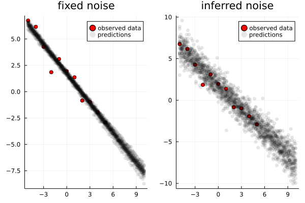
Notice that there is more uncertainty in the predictions made using the modified model.
We also compare the predictions using inference of the unmodified and modified models on the ys_noisy data set:
pred_ys = infer_and_predict(line_model, xs, ys_noisy, new_xs, [:slope, :intercept], 20, 1000)
fixed_noise_plot = plot_predictions(xs, ys_noisy, new_xs, pred_ys; title="fixed noise")
pred_ys = infer_and_predict(line_model_fancy, xs, ys_noisy, new_xs, [:slope, :intercept, :noise], 20, 10000)
inferred_noise_plot = plot_predictions(xs, ys_noisy, new_xs, pred_ys; title="inferred noise")
plot(fixed_noise_plot, inferred_noise_plot)
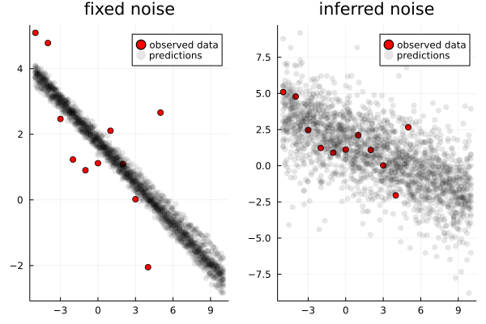
Notice that while the unmodified model was very overconfident, the modified model has an appropriate level of uncertainty, while still capturing the general negative trend.
Exercise
Write a modified version of the sine model that makes noise into a random choice. Compare the predicted data with the observed data using infer_and_predict and plot_predictions for the unmodified and modified models, and for the ys_sine and ys_noisy data sets. Discuss the results. Experiment with the amount of inference computation used. The amount of inference computation will need to be higher for the model with the noise as a random choice.
We have provided you with starter code:
@gen function sine_model_fancy(xs::Vector{Float64})
# < your code here >
for (i, x) in enumerate(xs)
{(:y, i)} ~ normal(0., 0.1) # < edit this line >
end
return nothing
end;
# Modify the line below to experiment with the amount_of_computation parameter
pred_ys = infer_and_predict(sine_model, xs, ys_sine, new_xs, [], 20, 1)
fixed_noise_plot = plot_predictions(xs, ys_sine, new_xs, pred_ys; title="Fixed noise level")
# Modify the line below to experiment with the amount_of_computation parameter
pred_ys = infer_and_predict(sine_model_fancy, xs, ys_sine, new_xs, [], 20, 1)
inferred_noise_plot = plot_predictions(xs, ys_sine, new_xs, pred_ys; title="Inferred noise level")
Plots.plot(fixed_noise_plot, inferred_noise_plot)
# Modify the line below to experiment with the amount_of_computation parameter
pred_ys = infer_and_predict(sine_model, xs, ys_noisy, new_xs, [], 20, 1)
fixed_noise_plot = plot_predictions(xs, ys_noisy, new_xs, pred_ys; title="Fixed noise level")
# Modify the line below to experiment with the amount_of_computation parameter
pred_ys = infer_and_predict(sine_model_fancy, xs, ys_noisy, new_xs, [], 20, 1)
inferred_noise_plot = plot_predictions(xs, ys_noisy, new_xs, pred_ys; title="Inferred noise level")
Plots.plot(fixed_noise_plot, inferred_noise_plot)
5. Calling other generative functions
In addition to making random choices, generative functions can invoke other generative functions. To illustrate this, we will write a probabilistic model that combines the line model and the sine model. This model is able to explain data using either model, and which model is chosen will depend on the data. This is called model selection.
A generative function can invoke another generative function in three ways:
-
(NOT RECOMMENDED) using regular Julia function call syntax:
f(x) -
using the
~snytax with an address for the call:{addr} ~ f(x) -
using the
~syntax with a wildcard address:{*} ~ f(x)
When invoking using regular function call syntax, the random choices made by
the callee function are not traced at all, and Gen cannot reason about them during inference.
When invoking using ~ with a wildcard address ({*} ~ f(x)), the random choices of the
callee function are imported directly into the caller’s trace. So, for example, if f makes a choice
called :f_choice, then the caller’s trace will have a choice called :f_choice too.
Note that a downside of this is that if f is called twice by the same caller, then the two
choices called :f_choice will clash, leading to an error.
In this case, it is best to provide an address ({addr} ~ f(x)): f’s random choices will
be placed under the namespace addr.
@gen function foo()
{:y} ~ normal(0, 1)
end
@gen function bar()
{:x} ~ bernoulli(0.5)
# Call `foo` with a wildcard address.
# Its choices (:y) will appear directly
# within the trace of `bar`.
{*} ~ foo()
end
@gen function bar_using_namespace()
{:x} ~ bernoulli(0.5)
# Call `foo` with the address `:z`.
# The internal choice `:y` of `foo`
# will appear in our trace at the
# hierarchical address `:z => :y`.
{:z} ~ foo()
end;
We first show the addresses sampled by bar:
trace = Gen.simulate(bar, ())
Gen.get_choices(trace)
│
├── :y : 0.6475752978557953
│
└── :x : true
And the addresses sampled by bar_using_namespace:
trace = Gen.simulate(bar_using_namespace, ())
Gen.get_choices(trace)
│
├── :x : true
│
└── :z
│
└── :y : 0.3801328264226968
Using {addr} ~ f(), with a namespace, can help avoid address collisions for complex models.
A hierarchical address is represented as a Julia Pair, where the first element of the pair is the first element of the address and the second element of the pair is the rest of the address:
trace[Pair(:z, :y)]
0.3801328264226968
Julia uses the => operator as a shorthand for the Pair constructor, so we can access choices at hierarchical addresses like:
trace[:z => :y]
0.3801328264226968
If we have a hierarchical address with more than two elements, we can construct the address by chaining the => operator:
@gen function baz()
{:a} ~ bar_using_namespace()
end
trace = simulate(baz, ())
trace[:a => :z => :y]
0.5622991768999647
Note that the => operator associated right, so this is equivalent to:
trace[Pair(:a, Pair(:z, :y))]
0.5622991768999647
Now, we write a generative function that combines the line and sine models. It makes a Bernoulli random choice (e.g. a coin flip that returns true or false) that determines which of the two models will generate the data.
@gen function combined_model(xs::Vector{Float64})
if ({:is_line} ~ bernoulli(0.5))
# Call line_model_fancy on xs, and import
# its random choices directly into our trace.
return ({*} ~ line_model_fancy(xs))
else
# Call sine_model_fancy on xs, and import
# its random choices directly into our trace
return ({*} ~ sine_model_fancy(xs))
end
end;
We visualize some traces, and see that sometimes it samples linear data and other times sinusoidal data.
traces = [Gen.simulate(combined_model, (xs,)) for _=1:12];
grid(render_trace, traces)
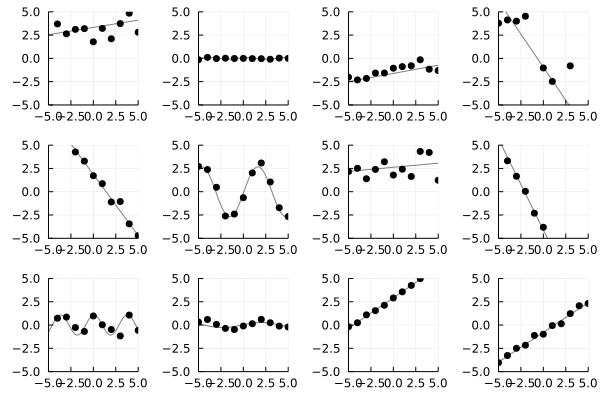
We run inference using this combined model on the ys data set and the ys_sine data set.
traces = [do_inference(combined_model, xs, ys, 10000) for _=1:10];
linear_dataset_plot = overlay(render_trace, traces)
traces = [do_inference(combined_model, xs, ys_sine, 10000) for _=1:10];
sine_dataset_plot = overlay(render_trace, traces)
Plots.plot(linear_dataset_plot, sine_dataset_plot)
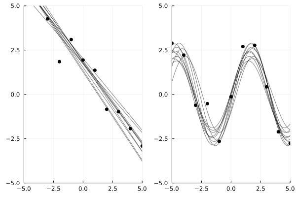
The results should show that the line model was inferred for the ys data set, and the sine wave model was inferred for the ys_sine data set.
Exercise
Construct a data set for which it is ambiguous whether the line or sine wave model is best. Visualize the inferred traces using render_combined to illustrate the ambiguity. Write a program that takes the data set and returns an estimate of the posterior probability that the data was generated by the sine wave model, and run it on your data set.
Hint: To estimate the posterior probability that the data was generated by the sine wave model, run the inference program many times to compute a large number of traces, and then compute the fraction of those traces in which :is_line is false.
6. Modeling with an unbounded number of parameters
Gen’s built-in modeling language can be used to express models that use an unbounded number of parameters. This section walks you through development of a model of data that does not a-priori specify an upper bound on the complexity of the model, but instead infers the complexity of the model as well as the parameters. This is a simple example of a Bayesian nonparametric model.
We will consider two data sets:
xs_dense = collect(range(-5, stop=5, length=50))
ys_simple = fill(1., length(xs_dense)) .+ randn(length(xs_dense)) * 0.1
ys_complex = [Int(floor(abs(x/3))) % 2 == 0 ? 2 : 0 for x in xs_dense] .+ randn(length(xs_dense)) * 0.1;
simple_plot = scatter(xs_dense, ys_simple, color="black", label=nothing, title="ys-simple", ylim=(-1, 3))
complex_plot = scatter(xs_dense, ys_complex, color="black", label=nothing, title="ys-complex", ylim=(-1, 3))
Plots.plot(simple_plot, complex_plot)
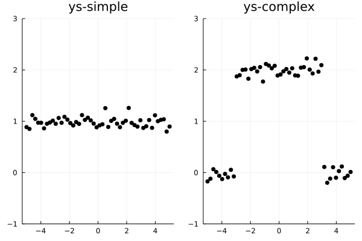
The data set on the left appears to be best explained as a contant function with some noise. The data set on the right appears to include two changepoints, with a constant function in between the changepoints. We want a model that does not a-priori choose the number of changepoints in the data. To do this, we will recursively partition the interval into regions. We define a Julia data structure that represents a binary tree of intervals; each leaf node represents a region in which the function is constant.
struct Interval
l::Float64
u::Float64
end
abstract type Node end
struct InternalNode <: Node
left::Node
right::Node
interval::Interval
end
struct LeafNode <: Node
value::Float64
interval::Interval
end
We now write a generative function that randomly creates such a tree. Note the use of recursion in this function to create arbitrarily large trees representing arbitrarily many changepoints. Also note that we assign the address namespaces :left and :right to the calls made for the two recursive calls to generate_segments.
@gen function generate_segments(l::Float64, u::Float64)
interval = Interval(l, u)
if ({:isleaf} ~ bernoulli(0.7))
value = ({:value} ~ normal(0, 1))
return LeafNode(value, interval)
else
frac = ({:frac} ~ beta(2, 2))
mid = l + (u - l) * frac
# Call generate_segments recursively!
# Because we will call it twice -- one for the left
# child and one for the right child -- we use
# addresses to distinguish the calls.
left = ({:left} ~ generate_segments(l, mid))
right = ({:right} ~ generate_segments(mid, u))
return InternalNode(left, right, interval)
end
end;
We also define some helper functions to visualize traces of the generate_segments function.
function render_node!(node::LeafNode)
plot!([node.interval.l, node.interval.u], [node.value, node.value], label=nothing, linewidth=5)
end
function render_node!(node::InternalNode)
render_node!(node.left)
render_node!(node.right)
end;
function render_segments_trace(trace; xlim=(0,1))
node = get_retval(trace)
fig = plot(xlim=xlim, ylim=(-3, 3))
render_node!(node)
return fig
end;
We generate 12 traces from this function and visualize them below. We plot the piecewise constant function that was sampled by each run of the generative function. Different constant segments are shown in different colors. Run the cell a few times to get a better sense of the distribution on functions that is represented by the generative function.
traces = [Gen.simulate(generate_segments, (0., 1.)) for i=1:12]
grid(render_segments_trace, traces)
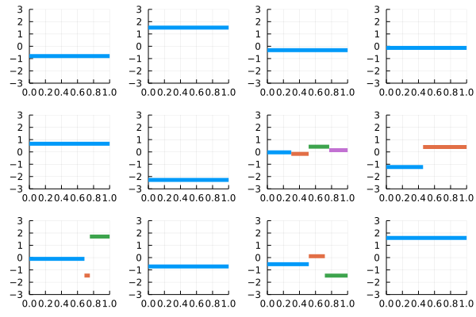
Because we only sub-divide an interval with 30% probability, most of these sampled traces have only one segment.
Now that we have a generative function that generates a random piecewise-constant function, we write a model that adds noise to the resulting constant functions to generate a data set of y-coordinates. The noise level will be a random choice.
# get_value_at searches a binary tree for
# the leaf node containing some value.
function get_value_at(x::Float64, node::LeafNode)
@assert x >= node.interval.l && x <= node.interval.u
return node.value
end
function get_value_at(x::Float64, node::InternalNode)
@assert x >= node.interval.l && x <= node.interval.u
if x <= node.left.interval.u
get_value_at(x, node.left)
else
get_value_at(x, node.right)
end
end
# Our full model
@gen function changepoint_model(xs::Vector{Float64})
node = ({:tree} ~ generate_segments(minimum(xs), maximum(xs)))
noise = ({:noise} ~ gamma(0.5, 0.5))
for (i, x) in enumerate(xs)
{(:y, i)} ~ normal(get_value_at(x, node), noise)
end
return node
end;
We write a visualization for changepoint_model below:
function render_changepoint_model_trace(trace; show_data=true)
xs = Gen.get_args(trace)[1]
node = Gen.get_retval(trace)
fig = render_segments_trace(trace; xlim=(minimum(xs), maximum(xs)))
render_node!(node)
if show_data
ys = [trace[(:y, i)] for i=1:length(xs)]
scatter!(xs, ys, c="gray", label=nothing, alpha=0.3, markersize=3)
end
end;
Finally, we generate some simulated data sets and visualize them on top of the underlying piecewise constant function from which they were generated:
traces = [Gen.simulate(changepoint_model, (xs_dense,)) for i=1:12]
grid(render_changepoint_model_trace, traces)
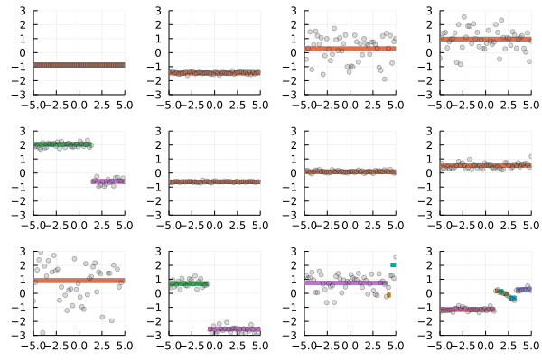
Notice that the amount of variability around the piecewise constant mean function differs from trace to trace.
Now we perform inference for the simple data set:
traces = [do_inference(changepoint_model, xs_dense, ys_simple, 10000) for _=1:12];
grid(render_changepoint_model_trace, traces)
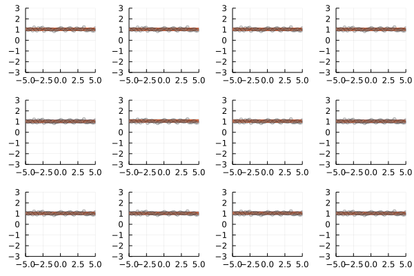
We see that we inferred that the mean function that explains the data is a constant with very high probability.
For inference about the complex data set, we use more computation. You can experiment with different amounts of computation to see how the quality of the inferences degrade with less computation. Note that we are using a very simple generic inference algorithm in this tutorial, which really isn’t suited for this more complex task. In later tutorials, we will learn how to write more efficient algorithms, so that accurate results can be obtained with significantly less computation. We will also see ways of annotating the model for better performance, no matter the inference algorithm.
Caveat: the following cell may run for 2-3 minutes.
traces = [do_inference(changepoint_model, xs_dense, ys_complex, 100000) for _=1:12];
grid(render_changepoint_model_trace, traces)
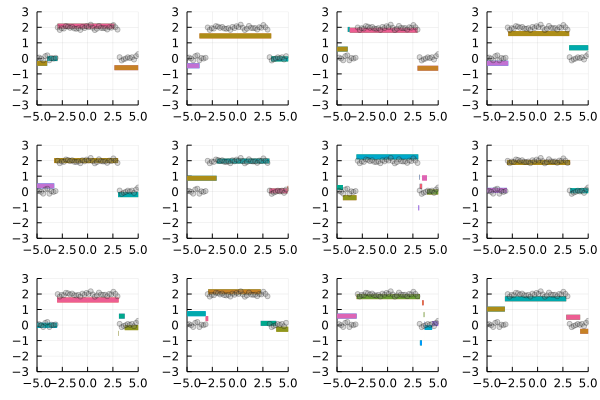
The results show that more segments are inferred for the more complex data set.
Exercise
Write a function that takes a data set of x- and y-coordinates and plots the histogram of the probability distribution on the number of changepoints.
Show the results for the ys_simple and ys_complex data sets.
Hint: The return value of changepoint_model is the tree of Node values. Walk this tree.
Exercise
Write a new version of changepoint_model that uses {*} ~ ... without an address to make the recursive calls.
Hint: You will need to guarantee that all addresses are unique. How can you label each node in a binary tree using an integer?